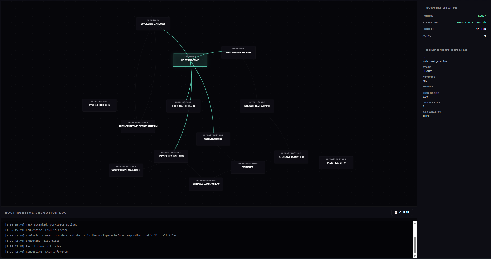
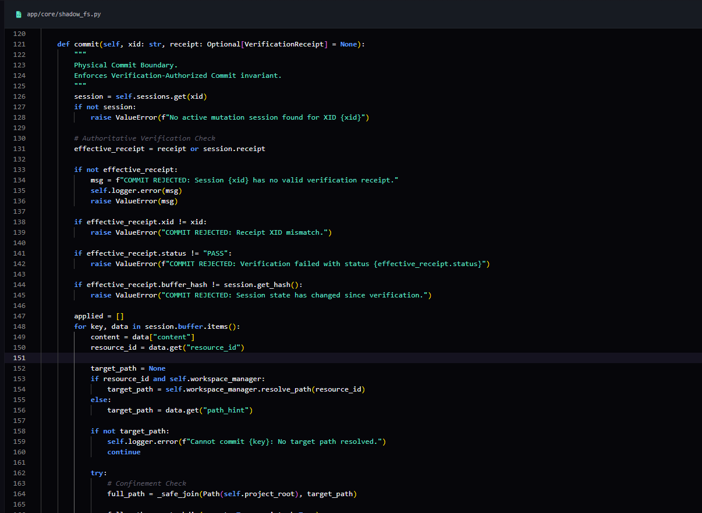
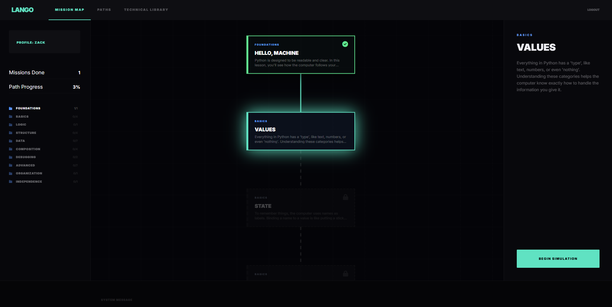
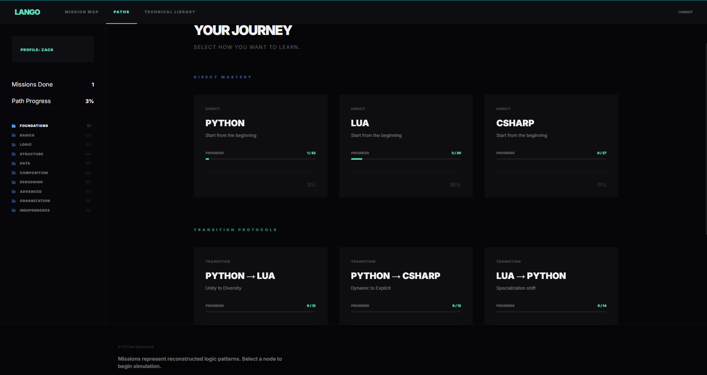

AEOWUN ENGINE.
COGNITIVE MESH AUTHORITY.
A sovereign engineering runtime driven by a Concurrent Causal Blackboard that enforces thread-safe co-observation and automated contradiction detection.
01 // ARCHITECTURE
Consistent View Principle
AEOWUN enforces a strict Causal Provenance model. Every action is anchored to a verified User Intent and Decision ID, ensuring that no execution occurs silently or anonymously. The coordinated mesh of agents operates under a shared state authority.

02 // OBSERVABILITY
Host Runtime Execution
Comprehensive tracking of every runtime event. The system logs task acceptance,
workspace activation, and specific tool calls like list_files,
providing a transparent view into the cognitive decision-making process.
03 // SYSTEM HEALTH
Runtime Integrity
Continuous monitoring of the runtime synchronization state. The system tracks active model tiers (e.g., nemotron-nano), context token usage, and hardware lanes to ensure optimal performance and resource availability.

04 // ISOLATION
ShadowFS Workspace Substrate
To maintain workspace integrity during autonomous operations, mutations are staged in task-isolated memory buffers. As seen in the commit logic, physical disk writes are strictly gated by a Verification-Authorized Commit invariant.
05 // VERIFICATION
Steel Thread & DNA Analysis
Deterministic fault localization that resolves tracebacks against a complex Knowledge Graph. The system sequences project patterns to maintain persistent cognitive alignment with the codebase's unique structure.
AXEIS RUNTIME.
AUTHORITATIVE EVIDENCE GOVERNANCE.
A controlled research runtime that transforms raw information into Defensible Thought through a strict evidence-native data model and a mandatory adversarial Kill Phase.
01 // AUTHORITY
Authoritative Manager (AAM)
AXEIS operates under a non-negotiable rule: "The LLM proposes, AXEIS decides." The AAM governs every state transition, ensuring that no agent can independently declare its own work as verified or complete.
02 // ADVERSARIAL
Mandatory Kill Phase
Unlike traditional AI assistants, AXEIS actively attempts to destroy the surviving theory. It searches for contradictory evidence, prior art, and internal contradictions to ensure only the most defensible ideas survive.
03 // PROVENANCE
Evidence-Native Data Model
Every major conclusion maintains a strict chain of custody: Conclusion → Claim → Evidence → Source → Document. This transforms research from loose text into a structured intellectual memory.
LANGO SIMULATOR.
MULTI-DIMENSIONAL VALIDATION.
A programming simulator that evaluates code across Behavioral, Structural, and Conceptual dimensions using a proprietary Semantic IR engine.

01 // PROGRESSION
Hierarchical Mission Map
A dynamic visual blueprint of the learning journey. Lessons are organized into functional categories (Foundations, Basics, Logic), with a progression system that unlocks new missions as underlying concepts are mastered.
02 // SIMULATION
Active Workspace
A specialized engineering environment where learners write code and predict execution outcomes. The system provides immediate feedback on Behavior (Output) and Structure (Clean Code) using formal validation contracts.

03 // PEDAGOGY
Transition Protocols
The Transition Protocol architecture builds language bridges. By mapping target syntax onto a developer's Existing Mental Model, LANGO reduces cognitive load and focuses on the systemic deltas between established paradigms (e.g., C# → Python).
SYSTEMIC SIMULATIONS.
INTERACTIVE WORLDS.
An archive of digital experiences, city simulations, and alchemical environments built with systemic depth and atmospheric precision.
Tiny City
Large-scale city management and urban simulation. Focus on systemic growth and UI density.
The Apothecary
Atmospheric systemic roleplay and crafting logic.
Blackline
Interactive world-building and cinematic exploration.